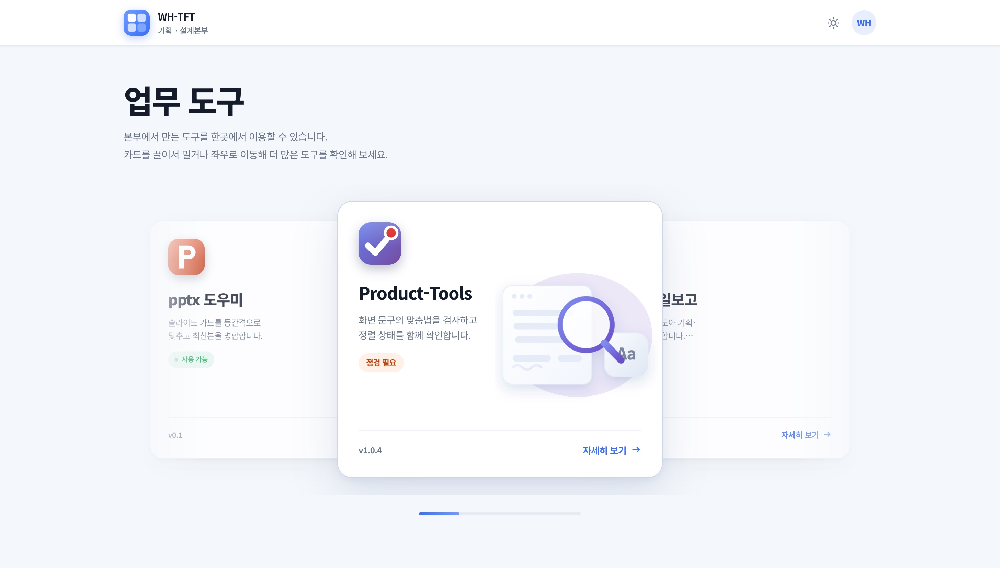
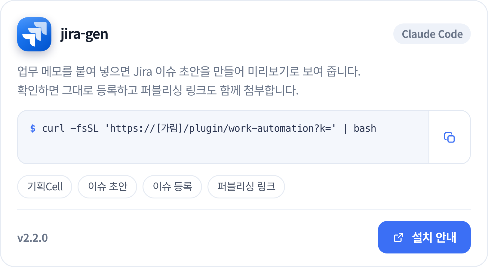
더 나은 제품은 어디서 시작될까?
박유진 Product Manager
현상과 원인을 구분해 해결해야 할 문제를 명확히 합니다.
대상과 상황을 구체화해 실제로 검증할 수 있게 합니다.
답이 우선순위와 다음 행동을 결정하는 근거가 되게 합니다.


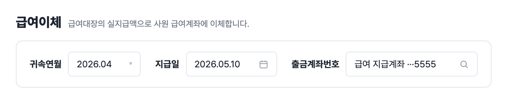
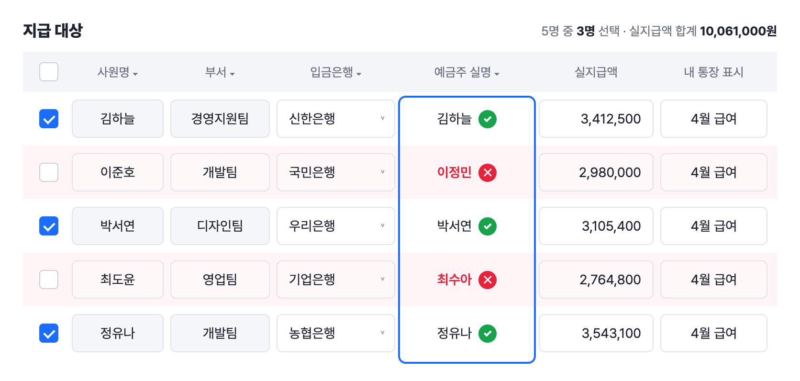
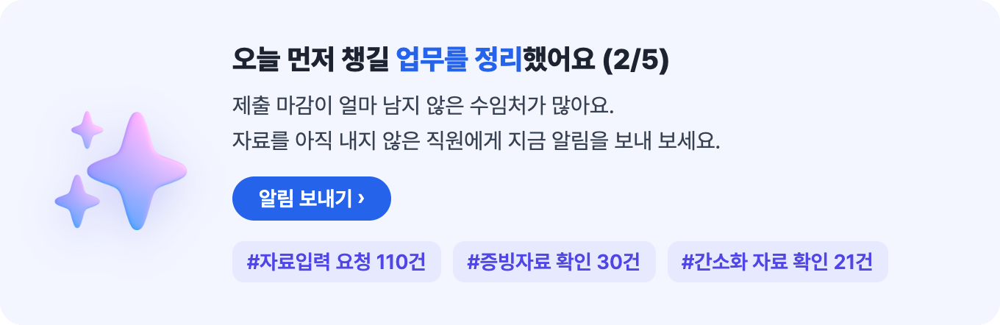
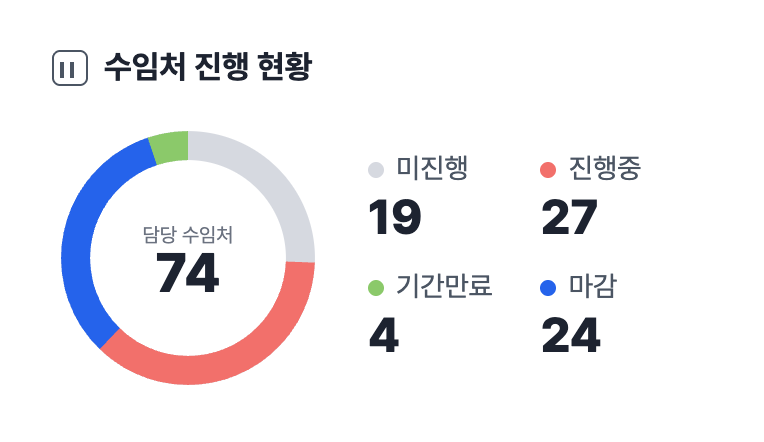
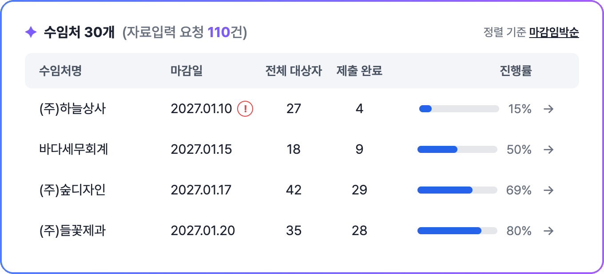
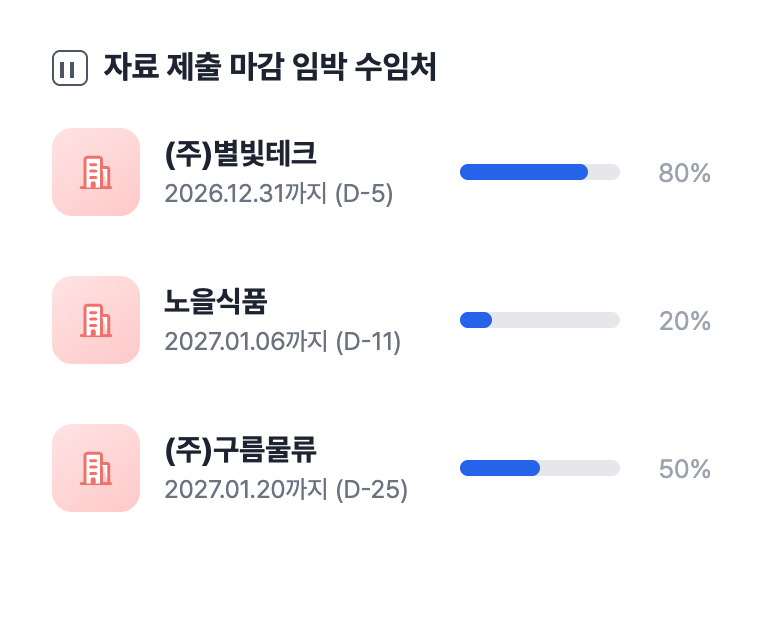
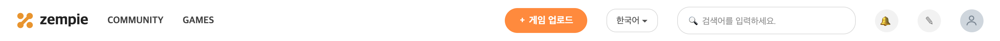
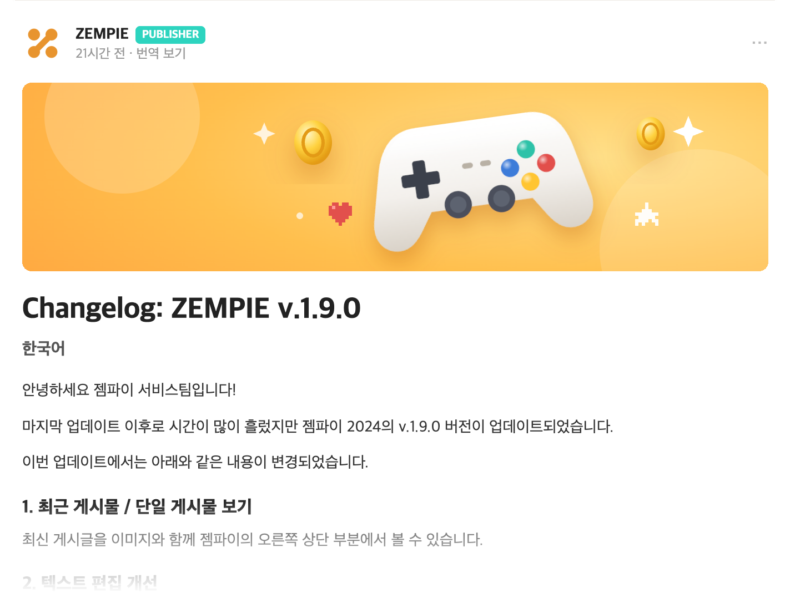
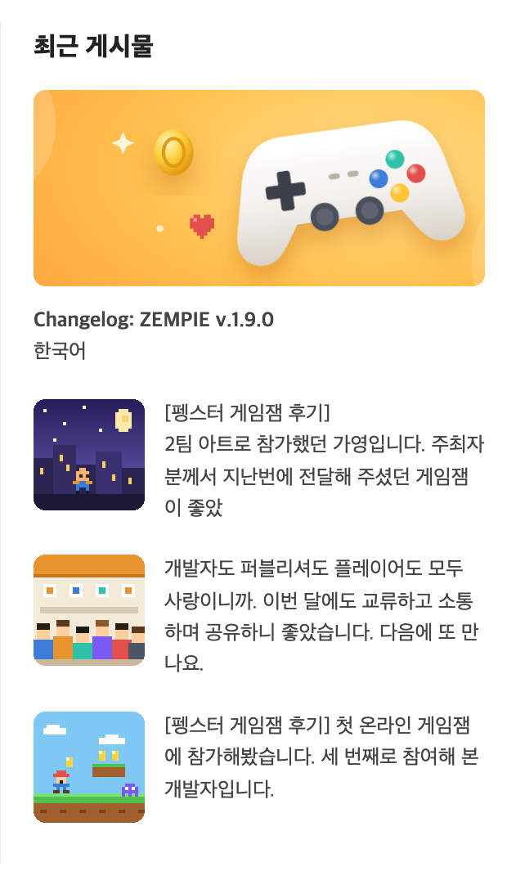
복잡한 요구사항에서 해결해야 할 핵심 문제와 우선순위를 명확히 합니다.
사용자, 비즈니스, 운영 환경을 함께 살펴 의사결정에 필요한 맥락을 정리합니다.
정리한 기준을 바탕으로 실행 가능한 방향을 결정하고, 실제 결과를 통해 검증합니다.
 이스트시큐리티2026.09–ing
이스트시큐리티2026.09–ing 더존비즈온2024.11–2026.09
더존비즈온2024.11–2026.09 프롬더레드2019.06–2023.12
프롬더레드2019.06–2023.12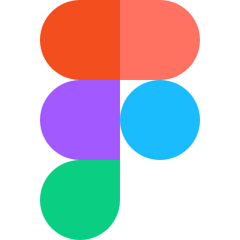
Figma Sketch
Sketch
 Claude Code
Claude Code
 Google Analytics
Google Analytics
 Confluence
Confluence
 Jira
Jira